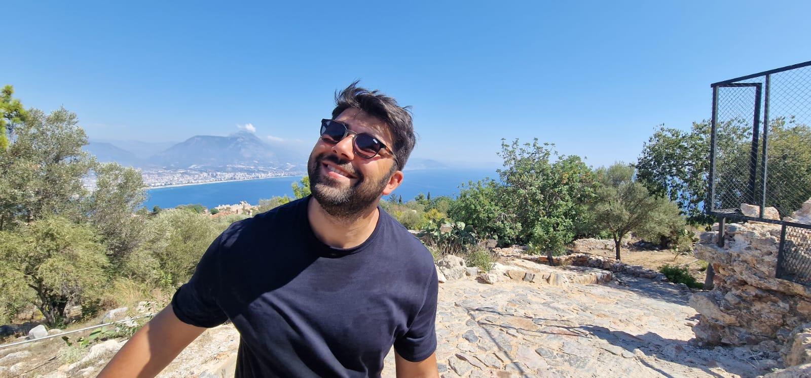

Just the highlights
Based in Newcastle-upon-Tyne, I'm a data engineer with hands-on experience building and maintaining data platforms on Azure and Microsoft Fabric. My work spans the full data lifecycle — ingesting raw data from diverse sources, transforming it through ETL/ELT pipelines, and delivering clean, reliable datasets to analytics and reporting teams. Before moving into data engineering I built a successful career in sales, which means I understand the business context behind the data I work with — not just the technical implementation.
Technologies I work with:
- Azure Data Factory
- Microsoft Fabric
- Azure Synapse
- Python
- SQL / PySpark
- Delta Lake
- Power BI
